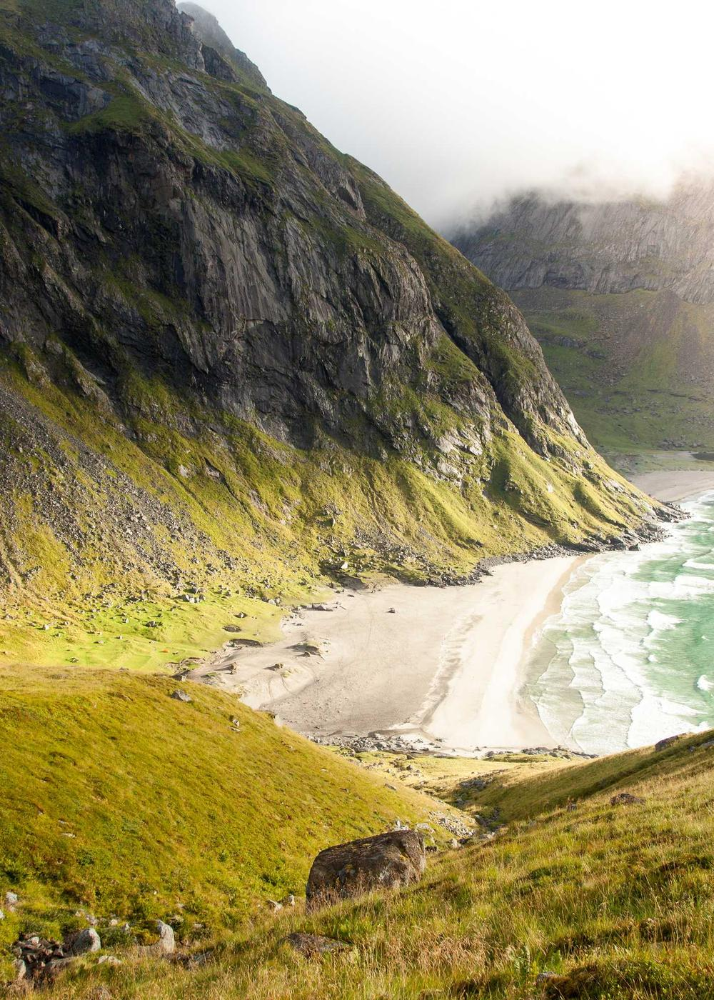

Guided rides on the north coast road
Three days, two guesthouses, a van for your bags. Small groups of eight, from May to September.

Questions before you book
How fit do I need to be?
You ride 30 to 62 km a day at a conversational pace, with one climb on day one. Anyone who rides a few hours a week will be fine.
Can I bring my own bike?
Yes. The van carries bags only, so the bike rides every day. We also hire road and gravel bikes for €45 a day.
What if the weather turns?
We ride in rain. In a storm the day's stage goes by van and the guesthouse keeps the room.
How do I get to the start?
The ride starts at the station in Bergen at 10:00 on the first day and ends at a station on the same line.

Ride the north coast with us this summer
Eight dates from May to September. Groups of eight, from €640 a person.